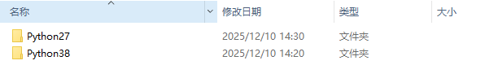
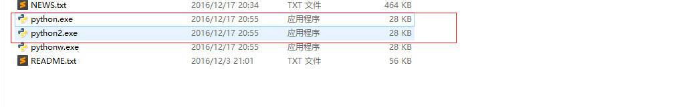
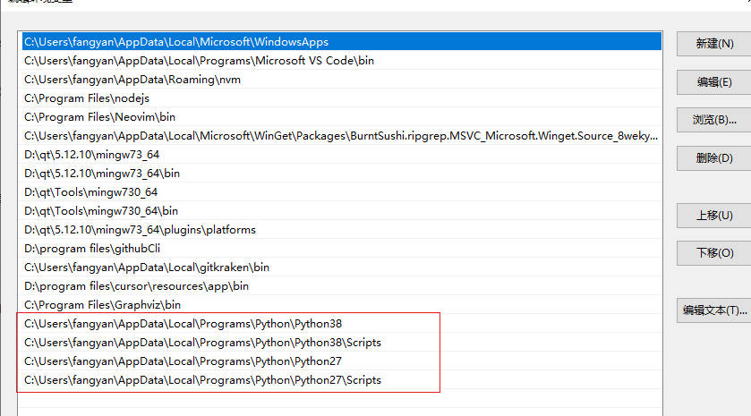
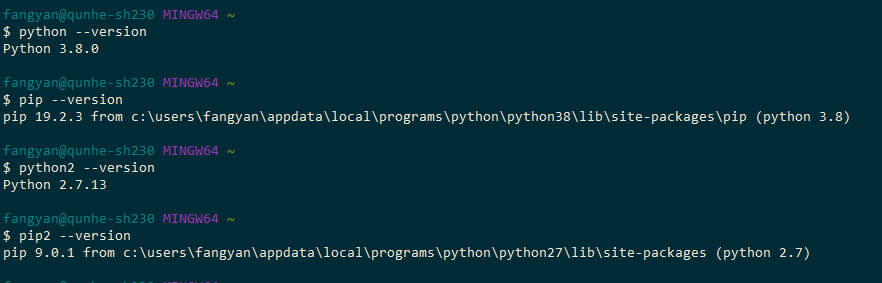

平时并没有用 Python 工作，最近学习 AI 用到了 Python，但是电脑上只有一个不知何时安装的 Python3，而我看的 AI 书籍中用到的却是 python2，所以不得不安装一个。这里记录下如何在已有 python3，且不卸载 python3 的情况下安装 python2，并能够正确使用。
首先在下载页面下载：
python27: https://www.python.org/downloads/release/python-2713/
最好将 python 安装到统一的目录下，方便管理，安装后，打开 python 安装目录，如下：

进入 python27，复制一个 python.exe 文件，命名为 python2：

添加环境变量：

测试 python 和 pip:
